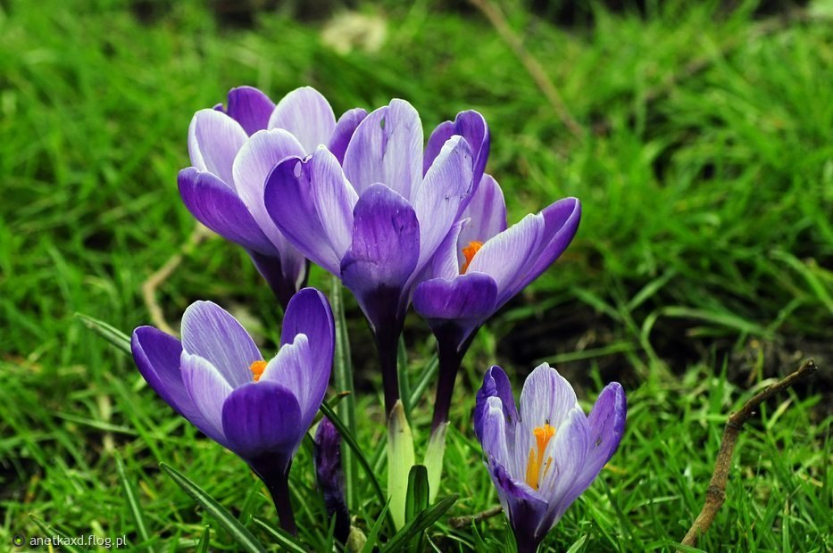
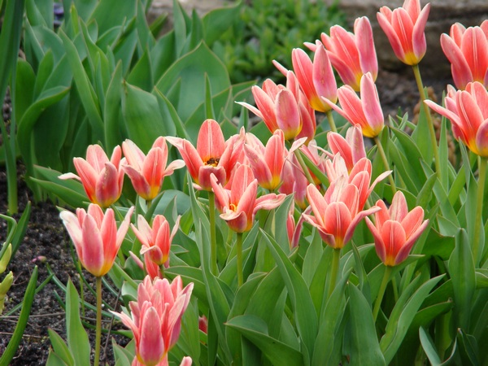
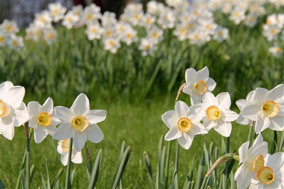

witaj wiosno!
| wiosenne kwiaty | |
 |
 |
| żonkil | narcyz |
|  |  |
| krokus | tulipan |
|
Żonkil - gatunek roślin z rodziny amarylkowatych. Nazwa pochodzi od francuskiego słowa jonquille (żonkil, żółty narcyz), które to słowo wywodzi się z kolei od hiszpańskiego junquillo - zdrobnienia od junco (trzcina, sitowie). |
| Narcyz - rodzaj roślin należący do rodziny amarylkowatych. Dziko rosną w krajach Narcyz śródziemnomorskich, w Europie Środkowej i Północnej oraz w Azji (Chiny, Japonia). Są uprawiane w wielu krajach świata. | |
| Krokus - wieloletnia, ozdobna, a także przyprawowa roślina bulwiasta. Kwiaty pojawiają się wiosną, ukazując się niekiedy spod warstwy śniegu. Wyrastają, podobnie jak wąskie liście, z młodych bulw przybyszowych. | |
| Tulipan - rodzaj roślin cebulowych nalezący do rodziny liliowatych. Zalicza się do niego ok. 120 gatunków. Naturalny obszar występowania tulipana to Europa Południowa, północna Afryka, Azja od Turcji, przez Iran, góry Pamir i Hindukusz, stepy Kazachstanu, po północno-wschodnie Chiny i Japoni. |
imię i nazwisko autora:
Daria Robak
Daria Robak